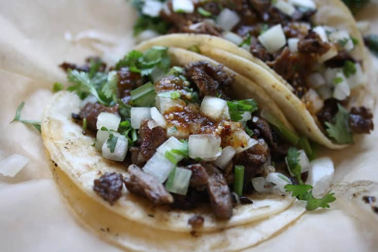

Ingredients:
Tacos can be made in multiple different ways, but I will list the most common ingredients found in a standard Mexican taco.
- Meat Your choice of meat! Common choices are beef, chicken, and pork.
- Onion Diced onions!
- Sauce I'm not sure how to make the sauce but you can buy it at your local grocery store.
- Cilantros Mainly there so it looks pretty.
- Limes Sliced in little wedges so you can squeeze onto your completed taco.
